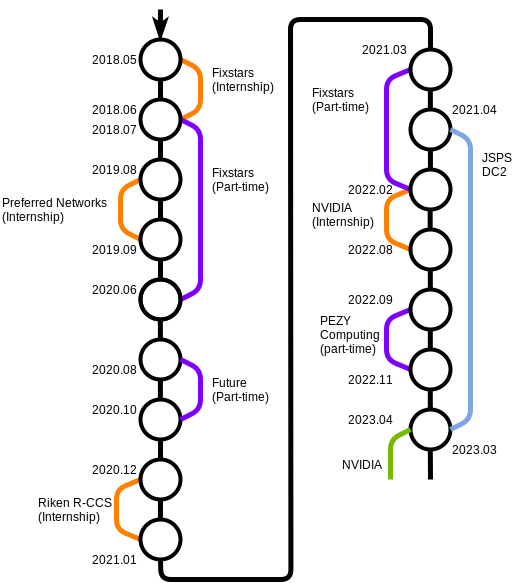
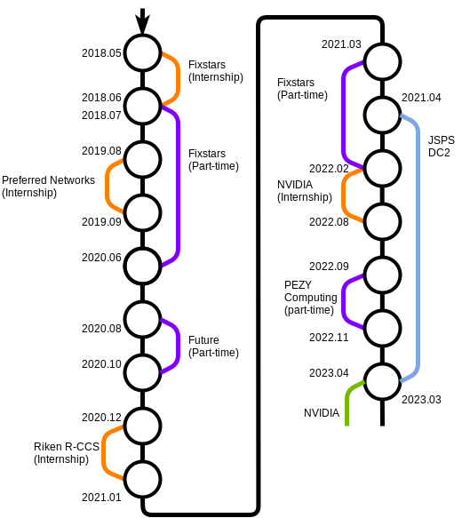

大友 広幸 / Ootomo, Hiroyuki
所属 / Affiliation
東京工業大学情報理工学院情報工学系 横田理央研究室 博士課程1年Rio Yokota Lab / School of computing, TokyoTech
Research
- 高性能計算 (High performance computing)
- 低精度/混同精度演算 (Mixed precision computing)
- 大規模計算 (Large scale computing)
- 量子計算 (Quantum computing)
Skills / Hobbies
- vimが好き (I like vim)
- C,C++ / CUDA (/PTX) / MPI / OpenMP
- Objective-C
- Linux (サーバ管理/運用)
- ピザ窯ちょっと作れる (Building pizza oven)
- 廃PC部品でアクセサリを作ったり matelier (Creating accessories from used/broken computer parts)
- 歴史改変 (I like `git push -f`)
Work experience
- 2019.08 - 2019.09
Preferred Networks Internship program (Chip/MN-Core team) - 2018.07 - 2020.06
Fixstars (part-time job)
発表 - 2018.05 - 2018.06
Fixstars Internship program
発表
Graph:


TA/RA・メンター
- 2020.06
第1回GPUオンライン ミニキャンプ メンター
（東京工業大学 学術国際情報センター GPUコンピューティング研究会, エヌビディア合同会社 共催） - 2019.04 - Present
情報理工学院 数理・計算科学系 森研究室 RA - 2017.04 - Present
横田理央研究室 RA - 2018.08
スーパーコン本戦2018 チューター - 2017.08
スーパーコン本戦2017 チューター
Educational background
- 2020.04 - Present
東京工業大学情報理工学院情報工学系（博士課程） / School of computing, TokyoTech (Ph.D Student) - 2018.04 - 2020.03
東京工業大学情報理工学院情報工学系（修士課程） / School of computing, TokyoTech (Master) - 2014.04 - 2018.03
東京工業大学工学部情報工学科 / School of computing, TokyoTech - 2010.04 - 2013.03
埼玉県立川越高等学校 / Kawagoe high school
Research
Numerical calculation using NVIDIA TensorCores

Tensorコアは混合精度行列積和演算回路です．
Tensorコアへの入力行列は半精度である必要があり，これが行列積の精度を劣化させます．
この劣化はTensorコアの特長を活かした精度補正計算を行うことで緩和でき，これについての研究を行っています[SC'19 poster]．
TensorCores are specialized hardware for matrix multiplication and addition and are available on the latest NVIDIA GPUs.
Converting input matrices to half precision on TensorCores results loss of accuracy.
We recover the accuracy by using an accuracy correction technique which leverages the single precision multiplication and addition of TensorCores[SC'19 poster].
Projects
High performance ATSUKAN Computing

I'm building a GPU cluster to make hot sake (atsukan;熱燗).
Each node has two NVIDIA Tesla K20 GPUs and liquid cooling modules.
Gathered heat through cooling water is used to heat up sake.
Blog (Japanese)

Computer parts accessories

I'm making accessories from old/broken computer parts.
Web page (Japanese)
Publications
- Hiroyuki Ootomo, Rio Yokota "Randomized SVD on TensorCores", ISC 2020 Research Poster
- 大友広幸,横田理央 "TensorコアのAPIの構造解析を用いた拡張ライブラリの開発" 第173回ハイパフォーマンスコンピューティング研究会(COVID-19のため情報処理学会電子図書館にて公開のみ) 2020
- 吉藤尚生,大友広幸 "粒子法FLOSSに対する妥当性確認試験" 第33回数値流体力学シンポジウム 2019
- Hiroyuki Ootomo, Rio Yokota "TSQR on TensorCores" SC19 Research Poster, 2019 [Best Poster Nominee] [poster][slide]
- 大友広幸,横田理央 "Tensorコアを用いたTSQR" 日本応用数理学会 2019年度 年会 2019
- 大友広幸,横田理央 "Tensorコアを用いたTSQRのGPU実装" 第170回ハイパフォーマンスコンピューティング研究会 2019
- 大友広幸,横田理央 "Tensorコアを用いたBatced QR分解" 情報処理学会第81回全国大会 2019 [学生奨励賞]
- 大友広幸,大沢和樹,横田理央 "フィッシャー情報行列のクロネッカー因子分解を用いた深層学習" 情報処理学会第80回全国大会 2018
- 大友広幸,大沢和樹,横田理央 "フィッシャー情報行列のクロネッカー因子分解を用いた深層ニューラルネットワークの分散学習"第163回ハイパフォーマンスコンピューティング研究会 2018
Awards
- 第3回 HAKKO熱の実験コンテスト 銀賞 「計算パーツの熱に関する実験」 2020 - ブログ
Other publications
- 2019.06 「DualSPHysicsで静水圧問題」 第76回オープンCAE勉強会＠関東（流体など）【大崎】 - [発表後記]
- 2019.04 「vim入門」 第0回 #061_vimvimvim - [slide]
iOS Apps
乱数生成

メルセンヌ・ツイスタで疑似乱数を生成するアプリ
色比較

カメラから得た2種類の色を比較するアプリ
Links
Advent calendar
Contact
- Mail : ootomo.h@rio.gsic.titech.ac.jp